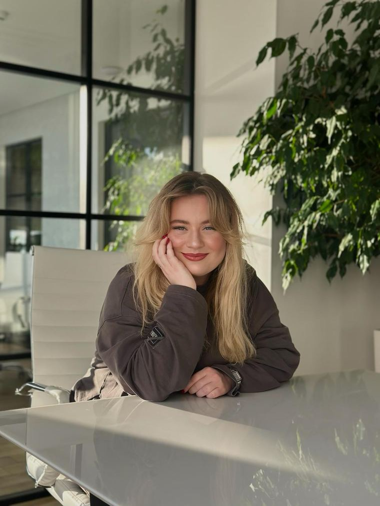
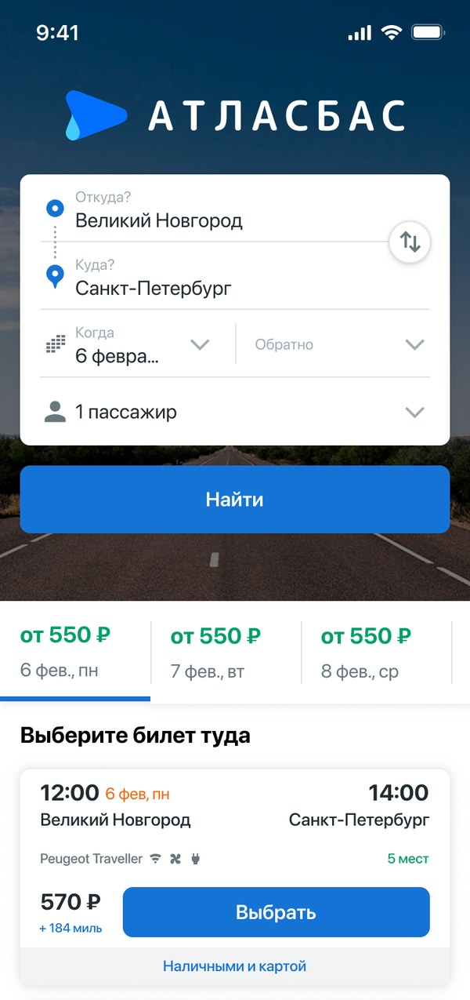
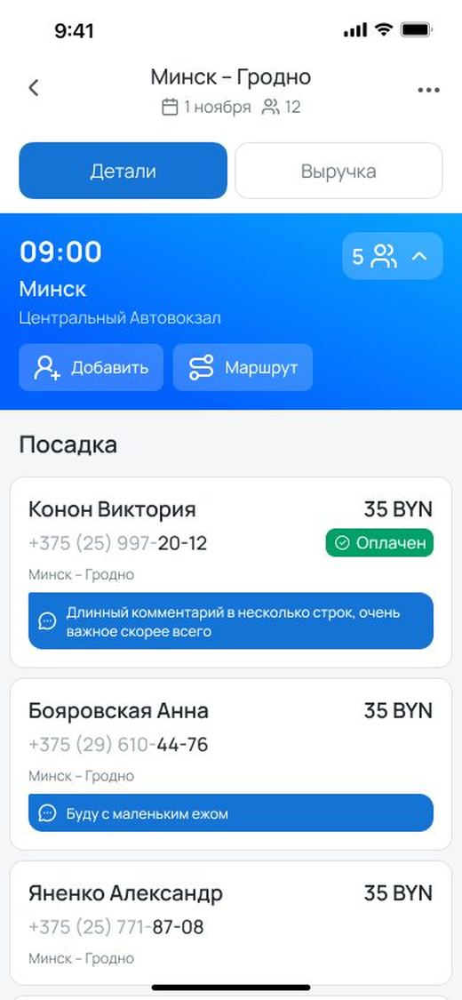
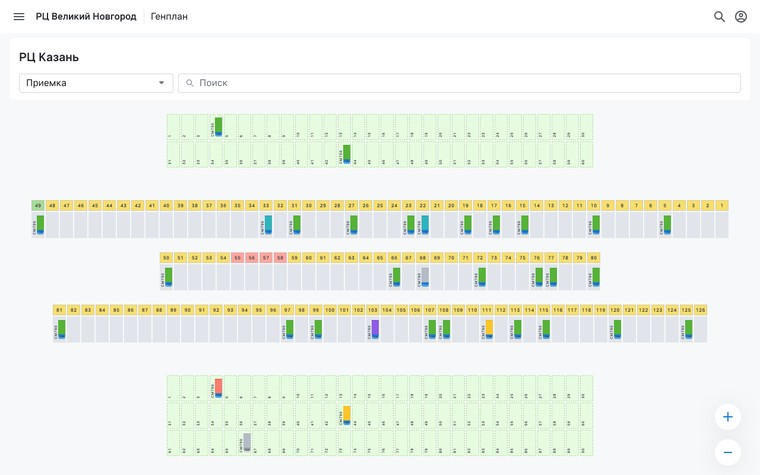
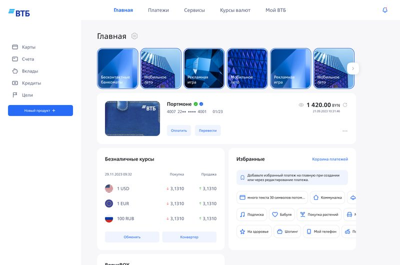
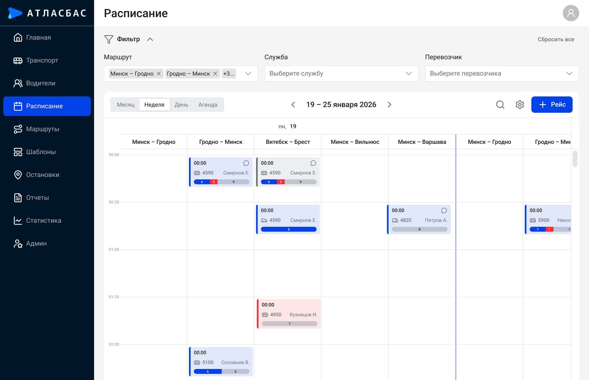

Анна ФилимоноваAnna Filimonova
Проектирую сложные B2C и B2B-продукты — от discovery и исследований до разработки и измеримого результата. I design complex B2C and B2B products — from discovery and research to production and measurable results.
Люблю задачи, где нужно разобраться в продукте, а не просто нарисовать интерфейс.I like problems where you have to understand the product, not just draw the interface.

Product discoveryProduct discovery
Исследую пользователей, анализирую данные и нахожу точки роста продукта.I research users, analyze data, and find where a product can grow.
Complex UXComplex UX
Разбираю сложные процессы, роли и data-heavy интерфейсы.I untangle complex processes, roles, and data-heavy interfaces.
Product impactProduct impact
Связываю дизайн-решения с конверсией, скоростью выполнения задач и качеством продукта.I tie design decisions to conversion, task speed, and product quality.
End-to-endEnd-to-end
Работаю от discovery и прототипа до design review, разработки и итераций после релиза.I work from discovery and prototype through design review, development, and post-launch iteration.
01 ПрофессиональноProfessional
Продуктовый дизайнер с 6+ годами опыта в B2C и B2B — транспорт, финтех, банкинг и ритейл. Проектирую продукты для Web, iOS, Android и PWA и веду задачи end-to-end: от discovery и исследований до дизайна, разработки и итераций после релиза. Product Designer with 6+ years across B2C and B2B — transport, fintech, banking, and retail. I design products for Web, iOS, Android, and PWA, and own tasks end-to-end: from discovery and research to design, development, and post-launch iteration.
02 Как я работаюHow I work
В работе соединяю пользовательские исследования, продуктовую аналитику и системное мышление. Мне интересно не просто улучшить экран, а понять, почему пользователь сталкивается с проблемой и как изменение продукта повлияет на бизнес. I combine user research, product analytics, and systems thinking. I'm interested not just in improving a screen, but in understanding why the user runs into a problem and how a change will affect the business.
Product & UXProduct & UX
Данные и эффектData & impact
ЛидерствоLeadership
AI в workflowAI in my workflow
Использую AI (Figma Make, Lovable, Claude) для быстрого прототипирования, проверки концепций и функциональных мокапов. I use AI (Figma Make, Lovable, Claude) for fast prototyping, concept validation, and functional mockups.
ИнструментыTools
ЯзыкиLanguages
Что мои дизайн-решения дали продуктамWhat the design decisions actually did
Избранные кейсыSelected case studies
Ниже — суть пяти проектов: проблема, процесс и результат. The essence of five projects below: problem, process, result.
AtlasBus — бронирование билетовAtlasBus — ticket booking
Нашла точки падения в воронке 3.2M+ сессий и перестроила ключевой booking flow — конверсия выросла с 9% до 12%.Found the drop-off points in a 3.2M+ session funnel and rebuilt the core booking flow — conversion rose from 9% to 12%.

билетBook your
ticket
AtlasBus — приложение водителяAtlasBus — driver app
Полевое исследование показало, что водителю приходится слишком много взаимодействовать с приложением во время посадки. Редизайн сократил время посадки на 38%.Field research showed drivers had to interact with the app too much during boarding. The redesign cut boarding time by 38%.

посадкойManage
boarding
YMS для X5 TechYMS for X5 Tech
Спроектировала 0→1 систему управления двором распределительного центра: 6 ролей, 50+ экранов, Desktop + Tablet.Designed a 0→1 distribution-center yard management system: 6 roles, 50+ screens, Desktop + Tablet.

дворомManage the
yard
ВТБ Беларусь — Digital BankVTB Belarus — Digital Bank
Единственный дизайнер в Scrum-команде из 10 человек. Полный редизайн банка для физлиц — и PWA со стилизацией под iOS взамен приложения, удалённого из App Store из-за санкций.Sole designer on a 10-person Scrum team. A full retail-banking redesign — plus an iOS-styled PWA replacing the app pulled from the App Store under sanctions.

деньгамиManage your
money
Pilot — диспетчерская AtlasBusPilot — AtlasBus dispatch system
5 глубинных интервью с маршрут- и трафик-менеджерами вскрыли, почему «Расписание» — ключевой рабочий экран — было невозможно быстро считать. Редизайн убрал визуальный хаос.5 in-depth interviews with route and traffic managers uncovered why the Schedule — the core work screen — couldn't be scanned at a glance. The redesign removed the visual chaos.

расписаниеBuild the
schedule
От проблемы к результатуFrom problem to result
Senior Product Designer
Вела дизайн экосистемы AtlasBus из 5+ продуктов для пассажирских перевозок: B2C-сервис покупки билетов и B2B-инструменты — Pilot для маршрут-менеджеров, водительское и операторское приложения, админ-панель. Полный цикл: от исследований до сопровождения в разработке.I led design across the AtlasBus ecosystem of 5+ products for passenger transport: a B2C ticket-booking service and B2B tools — Pilot for route managers, driver and operator apps, and an admin panel. Full cycle: from research to engineering handoff and iteration.
- Внедрила и привила процесс продуктовых исследований в компании (100+ участников опроса, 10+ интервью) — стала ключевым специалистом по этому направлению и наставляю других дизайнеров по методам исследований.Introduced and embedded a product-research practice at the company (100+ survey respondents, 10+ interviews) — became the go-to research specialist and mentor other designers on research methods.
- Объединила экран бронирования (3 шага → 1) — конверсия в бронирование выросла с 9% до 12% на воронке 3.2М+ сессий/мес.Merged the booking screen (3 steps → 1) — booking conversion rose from 9% to 12% across a 3.2M+ sessions/month funnel.
- Редизайн операторского сервиса Pilot — обработка рейса сократилась с 3 до 1.5 минут (−50%).Redesigned the Pilot operator service — trip processing time dropped from 3 to 1.5 minutes (−50%).
- Редизайн приложения водителя — время посадки пассажиров снизилось на 38%, оценка приложения водителями выросла с 2.8 до 4.1.Redesigned the driver app — passenger boarding time fell by 38%, and the app's driver rating rose from 2.8 to 4.1.
Senior Product Designer
Проектный контракт параллельно с основной работой в X5. Спроектировала «под ключ» мобильное приложение для обслуживания банковского оборудования (банкоматы, инфокиоски) для 3 ролей — оператора, администратора и центра кибербезопасности — от IA до hi-fi экранов, за 1 месяц, по документации от бизнес-аналитиков, без прямого доступа к пользователям. Учла условия полевой эксплуатации: авторизация по IMEI, запрет скриншотов, привязка к геолокации.A project contract alongside my main role at X5. Designed a mobile app for banking-equipment maintenance (ATMs, kiosks) for 3 roles — operator, admin and security center — end-to-end, from IA to hi-fi screens, in one month, working from BA documentation with no direct user access. Accounted for field-use constraints: IMEI-based authorization, screenshot blocking, geolocation binding.
Senior Product Designer
Спроектировала с нуля (0→1) систему управления двором распределительного центра YMS для X5 Tech — 6 ролей пользователей, 50+ экранов для Desktop и Tablet. Работала в рамках существующей дизайн-системы X5, расширяя её UI-кит под сценарии продукта.Designed X5 Tech's yard-management system (YMS) from scratch (0→1) — 6 user roles, 50+ screens for Desktop and Tablet. Worked within X5's existing design system, extending its UI kit for the product's workflows.
- Провела дискавери по регистрации водителей, приёмке и отгрузке грузов (интервью, аудит сценариев, обучающие материалы) → выявила узкие места и точки автоматизации для продукта уровня 0-to-1.Ran discovery on driver check-in, receiving and shipping (interviews, workflow audits, training materials) → identified bottlenecks and automation opportunities for a 0-to-1 product.
- Перепроектировала ключевые сценарии приёмки и отгрузки → устранила часть ручных шагов и снизила количество ошибок операторов.Redesigned the core receiving and shipping flows → removed manual steps and reduced operator errors.
- Спроектировала 50+ экранов от wireframes до hi-fi, структурировав интерфейс под высокую плотность данных без потери понятности.Designed 50+ screens from wireframes to hi-fi, structuring a high-density interface without sacrificing clarity.
Product Designer
Работала в выделенной Scrum-команде над редизайном ВТБ Беларусь — цифрового банка для физических лиц на Web, PWA и Android. Вела и развивала локальную дизайн-систему, инициировала процесс дизайн-ревью в команде.Worked in a dedicated Scrum team redesigning VTB Belarus — a digital bank for retail customers on Web, PWA and Android. Maintained and grew the local design system, and introduced a design-review process for the team.
- Перепроектировала ключевые пользовательские сценарии (интервью, юзабилити-тесты, продуктовая аналитика) → сократила количество шагов в ключевых операциях (перевод, платёж) на 20%.Redesigned core user flows (interviews, usability testing, product analytics) → cut the number of steps in key operations (transfer, payment) by 20%.
- Инициировала PWA со стилизацией под iOS после блокировки нативного приложения в App Store из-за санкций → сохранила доступ к сервису для 40% пользовательской базы на iOS.Initiated an iOS-styled PWA after the native app was pulled from the App Store due to sanctions → preserved service access for 40% of the iOS user base.
- Оптимизировала передачу дизайна в разработку → сократила количество доработок на 20–30% и ускорила выпуск релизов.Streamlined design handoff to engineering → cut development rework by 20–30% and sped up releases.
UX/UI Designer
Вела дизайн B2B digital banking продуктов — CRM, СДО, АРМ — для 7 банков (БНБ, БелВЭБ, Технобанк, Дабрабыт, ВТБ, mBank, Белгазпромбанк) на Web, PWA, iOS и Android, одновременно до 13 проектов на 4 платформах.Led design of B2B digital-banking products — CRM, e-learning, back-office systems — for 7 banks (BNB, BelVEB, Technobank, Dabrabyt, VTB, mBank, Belgazprombank) on Web, PWA, iOS and Android, running up to 13 projects in parallel across 4 platforms.
- Разработала дизайн-системы для 3 продуктов (iOS/Android/Web) с нуля → объединила продукты под единым визуальным решением, ускорила разработку новых фич.Built design systems for 3 products (iOS/Android/Web) from scratch → unified the products under one visual language and sped up new-feature development.
- Подготовила гайд по дизайн-системе и провела воркшоп для бизнес-аналитиков → БА начали самостоятельно собирать верхнеуровневые прототипы, снизив нагрузку на дизайн-команду на 15%.Wrote a design-system guide and ran a workshop for business analysts → BAs began assembling high-level prototypes themselves, cutting the design team's workload by 15%.
- Инициировала PWA со стилизацией под iOS для БелВЭБ после удаления его приложения из App Store → решение легло в основу повторного запуска сервиса.Initiated an iOS-styled PWA for BelVEB after its app was removed from the App Store → the approach became the basis for the service's relaunch.
- Наставляла 2 младших дизайнеров: дизайн-ревью макетов, консультации по проектам.Mentored 2 junior designers: design reviews and project consultations.
Преподаватель курса UX/UIUX/UI Course Instructor
Параллельно с основной работой. Разработала учебные материалы и провела менторство 12 студентов по курсу UX/UI, сопровождая учебные проекты от исследования до прототипа.Alongside my main role. Developed course materials and mentored 12 students through the UX/UI program, guiding their projects from research to prototype.
ОбразованиеEducation
Проф. обучениеProfessional training
MentorshipMentorship
Менторила 2 junior designers.Mentored 2 junior designers.
TeachingTeaching
Обучила 12 студентов UX/UI.Trained 12 UX/UI students.
Design processesDesign processes
Инициировала дизайн-ревью и улучшала сотрудничество между дизайном, продуктом и разработкой.Initiated design reviews and improved collaboration across design, product, and development.
Что говорят те, с кем я работалаWhat people I've worked with say
Анна год работала дизайнером в моей команде. Она помогла выстроить пользовательские исследования на одном из проектов и быстро стала нашим главным экспертом в этой области — это во многом изменило то, как компания в целом подходит к дизайн-задачам. Больше всего мне будет не хватать её энергии: она быстро находила слабые места в проекте и никогда не ждала, пока ей поставят задачу, чтобы предложить решение. Рекомендую Анну любой продуктовой команде, которая хочет опираться на реальные данные пользователей, а не на предположения. Anna spent a year as a designer on my team. She helped run user research on one of our projects and quickly became our go-to expert in that area — it largely changed how we approached design problems across the company. What I'll miss most is her energy: she was quick to spot weak points in a project and never waited to be assigned a task before coming forward with proposals to fix them. I recommend Anna to any product team that wants to rely on real user data instead of assumptions.
Мне довелось работать с Анной на логистическом проекте. Она быстро вошла в контекст, разобралась в задачах и на высоком уровне выполняла каждую из них — а также предлагала улучшения по ходу работы. Клиент остался очень доволен результатом. С Анной приятно работать в команде: позитивная, тактичная и полная энергии. I had the chance to work with Anna on a logistics project. She got up to speed quickly, grasped the challenges at hand, and delivered on every task at a high level — she also proposed several improvements along the way. The client was very happy with the results. Anna is a pleasure to work with on a team: positive, tactful, and full of energy.
- Преподавала UX/UI и наставляла начинающих дизайнеров.Taught UX/UI and mentored junior designers.
- Организую дизайн-завтраки в Минске для нетворкинга и обмена опытом — планирую расширять инициативу, приглашая больше практиков и спикеров.I run design-breakfast meetups in Minsk for the local design community — an initiative I'm planning to grow further with more speakers and practitioners.
- Иногда откладываю Figma в сторону, чтобы выступить на хакатонах и митапах — недавно рассказывала про UX облачных IaaS-платформ.I also step away from Figma now and then to speak at hackathons and meetups — recently on UX design for cloud IaaS platforms.
- Хорошо умею вовлекать команду в активности за пределами рабочих задач — на моих мероприятиях появляются даже разработчики, которые обычно держатся в стороне от митапов.I'm good at pulling a team into things beyond day-to-day tasks — even the developers who usually skip meetups tend to show up at mine.
Вне работы — динозавры: с лёгкостью отличу диплодока от велоцираптора. Outside of work — dinosaurs: I can tell a diplodocus from a velociraptor without blinking.
Ищете Senior Product Designer?Looking for a Senior Product Designer?
Есть сложный продукт, который нужно превратить в понятный пользовательский опыт? Открыта к full-time позициям — офис, гибрид, удалёнка, релокация — давайте обсудим. Have a complex product that needs to become a clear user experience? Open to full-time roles — office, hybrid, remote, or relocation — let's talk.